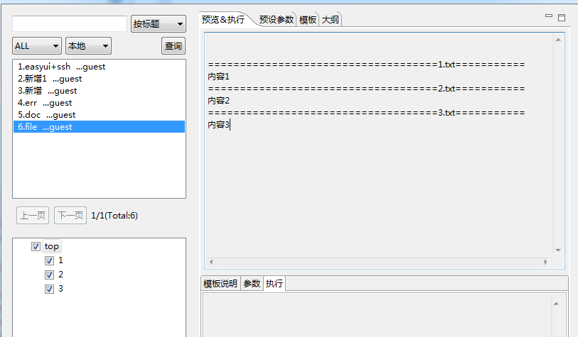
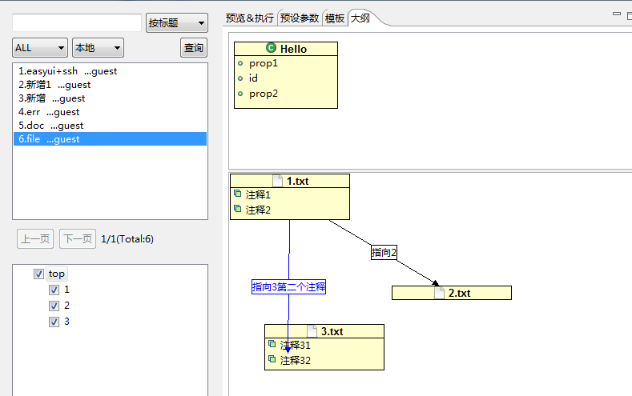

文件标签.
文件标签<ftl_file></ftl_file>
标签属性:
通常情况下，只需要有一个path属性即可。其他标签非必要标签。
1、path
必要标签，指明文件生成路径。
2、memo
非必要标签：文件注释，多个用分号分割
3、name
非必要标签：命名，一个模板里面，一个ftl_file标签的命名是唯一的。
4、anchor
非必要标签：文档之间依赖关系图。
<ftl_head> { 'node1':'1', 'node2':'2', 'node3':'3' } </ftl_head> <#if checkedList?seq_contains("node1")> <ftl_file path="1.txt" name="1" memo="注释1;注释2" anchor="2(指向2);3.2(指向3第二个注释)">内容1</ftl_file> </#if> <#if checkedList?seq_contains("node2")> <ftl_file path="2.txt" name="2">内容2</ftl_file> </#if> <#if checkedList?seq_contains("node3")> <ftl_file path="3.txt" name="3" memo="注释31;注释32">内容3</ftl_file> </#if>
预览内容

大纲
